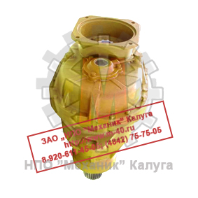
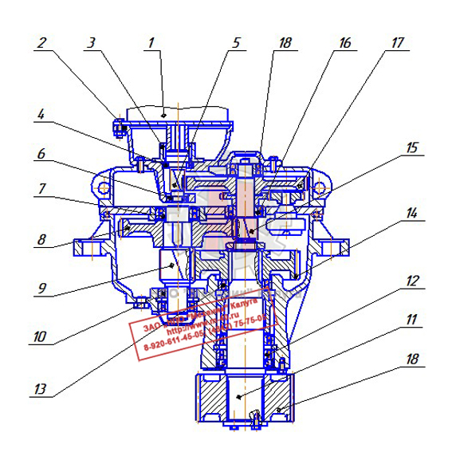

Позвонить: (4842) 75-75-05
Написать сообщение: m-40@inbox.ru

Запасные части для башенных кранов → Редуктор У3515

Механизм поворота У3515 предназначен для вращения поворотной части башенного крана вокруг вертикальной оси. Для башенных кранов 3,4 и 5-й размерных групп
конструкция кранового редуктора механизма поворота унифицирована.
Отличительными особенностями являются лишь передаточное число 121 или 134, количество редукторов на одном кране один или два и диаметр выходной шестерни,
входящей в зацепление с зубчатым венцом поворотного круга (ОПУ) башенного крана, в зависимости от модели крана.
Механизм поворота состоит из вертикального трехступенчатого редуктора, фланцевого электродвигателя и специального колодочного тормоза. Для смазки деталей
редуктора используется маслонасос с реверсируемым направлением вращения вала и постоянным направлением потока масла. Контроль за работой насоса производится
через смотровое стекло или штуцер маслопровода, расположенные на крышке редуктора.
Вертикальный трехступенчатый крановый редуктор У3515.42 состоит из чугунного корпуса, в котором расположены три пары шестерен с зацеплением Новикова.
Механизм поворота устанавливается на кронштейнах поворотной платформы, центрируется относительно опорно-поворотного круга горловиной редуктора и фиксируется
опорными проушинами в вильчатых кронштейнах посредством пальцев.
Для кранов, не имеющих вильчатых кронштейнов, возможна фиксация механизма поворота двумя специальными пальцами.
|
 |
 |
||||
| Рисунок 1. Внешний вид и чертеж редуктора механизма поворота У3515 | |||||

В крановом редукторе У3515.42С.1 с передаточным числом 121 применяются комплекты шестерен, указанные в Таблице 1.
Таблица 1
Запасные части редуктора У3515.42С.1.10.000
№ ступени
№ позиции
на чертеже
Наименование детали
Каталожный номер
1
5
Вал-шестерня m=3,15; z=12
У3515.42Р.10.042
17
Колесо зубчатое m=3,15; z=88
У3515.42Р.10.073
2
15
Вал-шестерня m=5; z=11
У3515.42Р.10.071
8
Колесо зубчатое m=5; z=53
У3515.42Р.10.082
3
9
Вал-шестерня m=8; z=9
У3515.42Р.10.081
14
Колесо зубчатое m=8; z=31
У3515.42Р.10.006
-
11
Выходной вал
У3515.42Р.10.009
18
Выходная шестерня
У3515.42Р.10.005
В крановом редукторе У3515.42П.1 с передаточным числом 134 применяются комплекты шестерен, указанные в Таблице 2.
Таблица 2
Запасные части редуктора У3515.42П.1.10.000
№ ступени
№ позиции
на чертеже
Наименование детали
Каталожный номер
1
5
Вал-шестерня m=3; z=13
У3515.42Р.10.042
17
Колесо зубчатое m=3; z=95
У3515.42Р.10.073
2
15
Вал-шестерня m=4; z=13
У3515.42Р.10.071
8
Колесо зубчатое m=4; z=65
У3515.42Р.10.082
3
9
Вал-шестерня m=6; z=12
У3515.42П.10.081
14
Колесо зубчатое m=6; z=42
У3515.42П.10.006
-
11
Выходной вал
У3515.42Р.10.009
18
Выходная шестерня
У3515.42Р.10.007
Цены на редуктор механизма поворота крана У3515 и запасные части к нему Вы можете узнать здесь,
или по телефону:
(4842) 75-75-05
Запасные части редуктора У3515.42С.1.10.000
| № ступени | № позиции на чертеже |
Наименование детали | Каталожный номер |
| 1 | 5 | Вал-шестерня m=3,15; z=12 | У3515.42Р.10.042 |
| 17 | Колесо зубчатое m=3,15; z=88 | У3515.42Р.10.073 | |
| 2 | 15 | Вал-шестерня m=5; z=11 | У3515.42Р.10.071 |
| 8 | Колесо зубчатое m=5; z=53 | У3515.42Р.10.082 | |
| 3 | 9 | Вал-шестерня m=8; z=9 | У3515.42Р.10.081 |
| 14 | Колесо зубчатое m=8; z=31 | У3515.42Р.10.006 | |
| - | 11 | Выходной вал | У3515.42Р.10.009 |
| 18 | Выходная шестерня | У3515.42Р.10.005 |
В крановом редукторе У3515.42П.1 с передаточным числом 134 применяются комплекты шестерен, указанные в Таблице 2.
Таблица 2
Запасные части редуктора У3515.42П.1.10.000
№ ступени
№ позиции
на чертеже
Наименование детали
Каталожный номер
1
5
Вал-шестерня m=3; z=13
У3515.42Р.10.042
17
Колесо зубчатое m=3; z=95
У3515.42Р.10.073
2
15
Вал-шестерня m=4; z=13
У3515.42Р.10.071
8
Колесо зубчатое m=4; z=65
У3515.42Р.10.082
3
9
Вал-шестерня m=6; z=12
У3515.42П.10.081
14
Колесо зубчатое m=6; z=42
У3515.42П.10.006
-
11
Выходной вал
У3515.42Р.10.009
18
Выходная шестерня
У3515.42Р.10.007
Цены на редуктор механизма поворота крана У3515 и запасные части к нему Вы можете узнать здесь,
или по телефону:
(4842) 75-75-05
Запасные части редуктора У3515.42П.1.10.000
| № ступени | № позиции на чертеже |
Наименование детали | Каталожный номер |
| 1 | 5 | Вал-шестерня m=3; z=13 | У3515.42Р.10.042 |
| 17 | Колесо зубчатое m=3; z=95 | У3515.42Р.10.073 | |
| 2 | 15 | Вал-шестерня m=4; z=13 | У3515.42Р.10.071 |
| 8 | Колесо зубчатое m=4; z=65 | У3515.42Р.10.082 | |
| 3 | 9 | Вал-шестерня m=6; z=12 | У3515.42П.10.081 |
| 14 | Колесо зубчатое m=6; z=42 | У3515.42П.10.006 | |
| - | 11 | Выходной вал | У3515.42Р.10.009 |
| 18 | Выходная шестерня | У3515.42Р.10.007 |
Цены на редуктор механизма поворота крана У3515 и запасные части к нему Вы можете узнать здесь,
или по телефону:
(4842) 75-75-05
| Апрель 2026 | ||||||
| Пн | Вт | Ср | Чт | Пт | Сб | Вс |
| 1 | 2 | 3 | 4 | 5 | ||
| 6 | 7 | 8 | 9 | 10 | 11 | 12 |
| 13 | 14 | 15 | 16 | 17 | 18 | 19 |
| 20 | 21 | 22 | 23 | 24 | 25 | 26 |
| 27 | 28 | 29 | 30 | |||
| Муфты зубчатые в наличии ГОСТ 5006-55 | ||
| Муфты МЗ | ||
| Тип | Цена, руб., с НДС |
Кол-во, шт. |
| МЗ-1 | 9 900 | 203 |
| МЗ-2 | 15 300 | 165 |
| МЗ-3 | 17 300 | 98 |
| МЗ-4 | 26 200 | 29 |
| МЗ-5 | 33 600 | 1 |
| МЗ-6 | 56 700 | 22 |
| МЗ-7 | 78 800 | 20 |
| МЗ-8 | 107 400 | 10 |
| МЗ-9 | 136 500 | 10 |
| МЗ-10 | 180 000 | 6 |
| Муфты зубчатые ГОСТ Р 50895-96 |
||
| Муфты МЗ | ||
| Тип | Цена, руб., с НДС | |
| МЗ-1 | 12 600 | |
| МЗ-2 | 17 300 | |
| МЗ-3 | 21 300 | |
| МЗ-4 | 29 200 | |
| МЗ-5 | 41 600 | |
| МЗ-6 | 62 700 | |
| МЗ-7 | 90 800 | |
| МЗ-8 | 119 400 | |
| МЗ-9 | 152 500 | |
| МЗ-10 | 210 000 | |